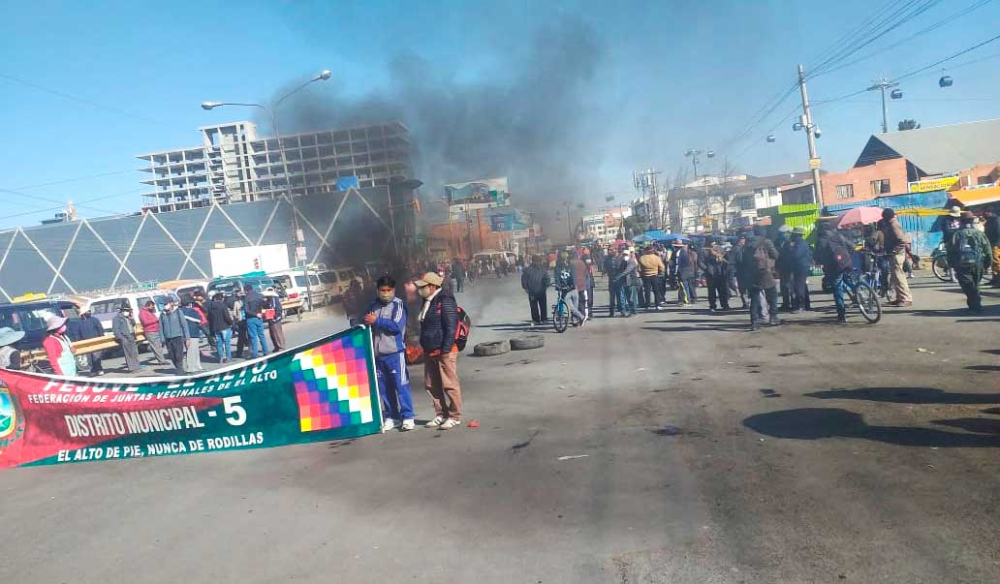
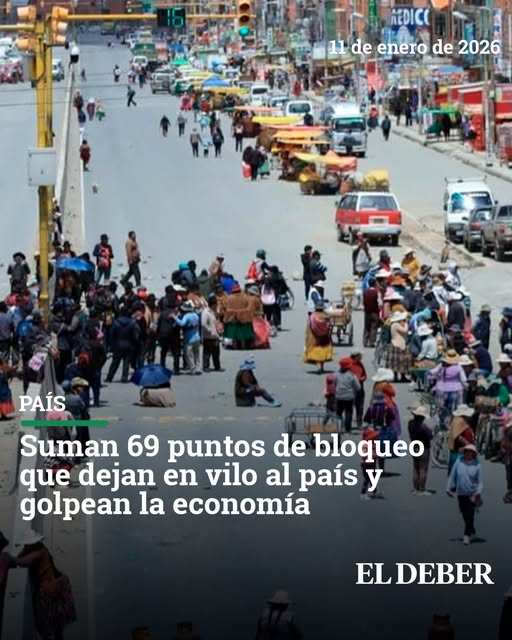

Simulador Web de Abastecimiento, Precios y Consumo Familiar
Herramienta educativa que modela matemáticamente cómo la escasez de carburante, el alza de precios y el pánico colectivo afectan a familias y comunidades en contexto de crisis social.

¿Qué está pasando en La Paz?
La ciudad de La Paz atraviesa una severa crisis social, política y económica impulsada por un paro general indefinido desde mayo de 2026.
Situación Crítica — Paro General Indefinido
El paro general liderado por la COB y sectores afines a Evo Morales exige la renuncia del presidente Rodrigo Paz ante el desabastecimiento general. Los bloqueos de carreteras han generado una crisis humanitaria sin precedentes.
Carburantes Escasos
Filas de horas en gasolineras, precios disparados en el mercado negro y transporte urbano paralizado por falta de combustible.
Emergencia Sanitaria
Hospitales sin insumos médicos ni oxígeno. Cirugías programadas canceladas y reservas de sangre al mínimo histórico.
Alimentos y Precios
Escasez severa de alimentos básicos. Mercados con estantes casi vacíos y precios que han aumentado hasta un 60% en productos esenciales.
Pánico Social
Rumores de escasez generan compras masivas por pánico, lo que agrava aún más el desabastecimiento y la especulación de precios.

Escenarios Seleccionados
Se seleccionaron tres escenarios que modelan con precisión matemática los principales problemas de la crisis actual.
Datos de Prueba para Probar
Cada simulador incluye casos de estudio con datos reales para verificar que los cálculos funcionan correctamente.
Caso 1: Reserva de Carburante
| Reserva inicial | 10,000 L |
| Consumo diario | 1,200 L/día |
| Reabastecimiento | 300 L/día |
| Nivel crítico | 2,000 L |
Resultado esperado: La reserva llega al nivel crítico alrededor del día 9.
Probar en Simulador ACaso 2: Precios de Alimentos
| Arroz | 8 Bs → 11 Bs · 10 u/mes |
| Papa | 7 Bs → 10 Bs · 8 u/mes |
| Aceite | 12 Bs → 18 Bs · 4 u/mes |
Resultado esperado: Gasto anterior: 190 Bs; actual: 254 Bs; diferencia: +64 Bs.
Probar en Simulador BCaso 3: Rumor de Escasez
| Demanda normal | 100 unidades |
| Aumento por rumor | 40% |
| Stock disponible | 120 unidades |
| Nº de familias | 50 |
Resultado esperado: Nueva demanda 140 u; déficit de 20 u; stock insuficiente.
Probar en Simulador E
Una Herramienta Educativa, No Política
Este proyecto aplica los fundamentos de Programación Web I para crear modelos matemáticos que expliquen fenómenos económicos reales. La finalidad es comprender cómo ciertos factores afectan el abastecimiento, los precios y la toma de decisiones familiares.
Lo que Aprendemos de Esta Crisis
La Reserva se Agota Rápido
Cuando el consumo supera el reabastecimiento, una estación de servicio puede quedarse sin combustible en menos de dos semanas en situación de crisis.
Los Precios Golpean a las Familias
Un aumento del 30-50% en productos básicos puede dejar a muchas familias sin poder cubrir su canasta mensual con el mismo ingreso.
El Pánico Agrava la Escasez
Cuando la demanda sube un 40% por pánico colectivo, un stock antes suficiente se convierte en insuficiente para toda la comunidad.